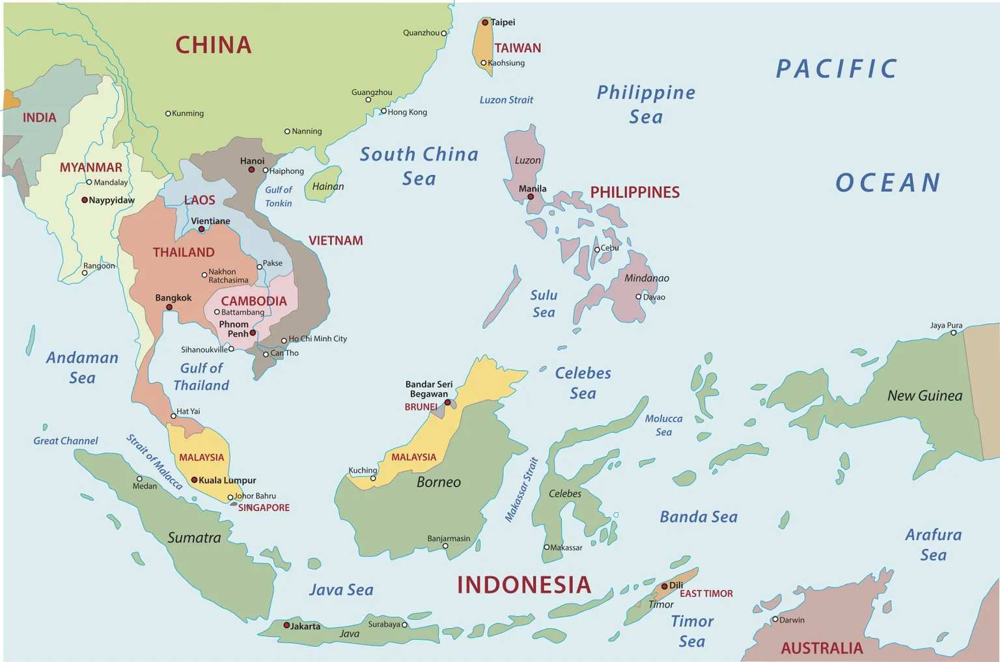

Philippines

To know:
Form of State: Unitary presidential, republic
President: Ferdinand Marcos Jr.
Vice President: Sara Duterte
Parliament: Congress
Official languages: Filipino, English
Capital: Manila
Total population (2023): 116,434,200
It is a Southeast Asian country made up of an archipelago of 7,641 islands, eleven of which total more than 90% of the land and of which only a little more than 2,000 are inhabited, while about 2,400 islands have not even been named. There are three geographical areas: Luzon Island, the Visayas archipelago and Mindanao. Luzon, the largest and northernmost island, is home to its capital, Manila, and the country's largest city, Quezon City. The country has maritime borders with Taiwan to the north, Japan to the northeast, Palau to the east and southeast, Indonesia to the south, Malaysia to the southwest, Vietnam to the west, and China to the northwest.
Culture
It is a mix of Malayo-Polynesian and Hispanic cultures, with influences from Chinese culture. The Philippines was first occupied by Melanesians; Today, they preserve a very traditional way of life and culture, although they are few in number. Their culture is still very visible, whether in the ethnic type, language, food, dance, etc. Spanish colonization, which lasted more than three centuries, had a profound impact on the national culture. The Philippines, ruled from both Mexico and Spain, received a bit of each other's culture. Their influences are evident in Catholic religious practices, such as masses and feasts. In the first half of the twentieth century, the Philippines became a U.S. territory: the influence of the United States is noticeable in the widespread use of the English language and in modern popular culture.
